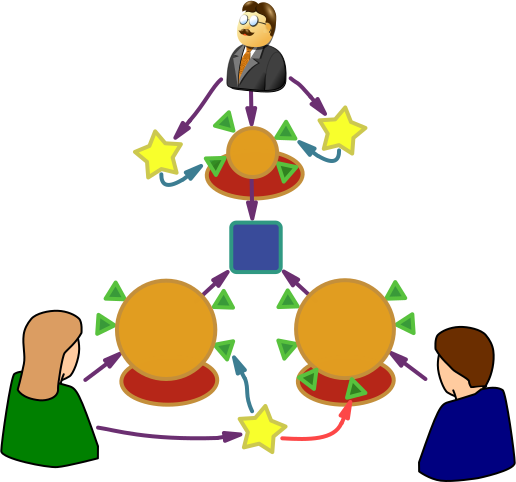

Полемическое взаимодействие
составил к.т.н. Черкашин Е.А., ИДСТУ СО РАН
по научным работам
проректора ИГУ д-р пед. наук проф. Рябчикова В.В.
Презентация подготовлена при помощи системы
Shower
(Страница Wiki).
Полемическое взаимодействие
в контексте реализации компетентностного подхода
в учебном процессе
составил
к.т.н.
Черкашин Е.А.
(ИДСТУ СО РАН)
по научным работам
проректора ИГУ д-р пед. наук проф. Рябчикова В.В.
Компетентностный подход
Новые требования к результатам образования:
- совершенствование содержания;
- новые методики и технологии
образовательной деятельности;
- реализация новых форм контроля (тестирование);
- контроль над осуществлением процесса внедрения.
Информацию, передаваемую обучающемуся, в
образовательном процессе в
педагогике понято называть содержанием.
Компетентностный подход
- ... к подготовке кадров –
совокупность теоретических положений и
организационно-педагогических мер (образовательная концепция),
направленных на обеспечение условий для формирования профессиональной
компетентности будущего специалиста.
- направленность ... на конечный результат – становление профессиональной
компетентности будущего специалиста.
Условий=соответствующей среды
Компетентностный подход
- подход, при котором результаты образования признаются
значимыми за пределами системы
образования. Образовательный результат в контексте
Болонского процесса должен быть
представлен профессиональной подготовленностью
выпускника к рынку труда:
использование совокупности знаний, умений,
компетенций, а также личностных
характеристик
для успешного роста выпускников вузов в
выбранной профессии и для расширения перспектив их
трудоустройства, в чем заинтересованы как сами
выпускники, так и общество, экономика в целом и
работодатели, в частности.
Компетенция
- способность к осуществлению реального, жизненного действия и
квалификационная характеристика индивида, взятая в момент
его включения в деятельность.
Поскольку у любого действия существуют два аспекта
-
ресурсный
и
продуктивный,
то именно развитие компетентностей определяет
превращение ресурса в продукт.
... постоянное обновление знаний,
владение новой информацией для успешного
применения этих знаний в конкретных условиях,
т.е. обладание оперативным и мобильным знанием.
Организация обучения
Центральным моментом организации компетентностноориентированного обучения является принцип ответственности и инициативы самих учащихся,
происходит смещение акцентов с односторонней авторитарной позиции преподавателя на активную, ответственную и самостоятельную позицию в учении студентов.
В системе образования
выделяют четыре линии реализации компетентностного подхода в образовании, направленные на формирование:
- ключевых компетенций;
- обобщенных предметных умений;
- прикладных предметных умений:
- жизненных навыков.
Ключевые компетенции надпредметного характера
- педагогические техники и технологии формирования умения понимания текстов, обработки информации разного рода, взаимодействия в группе.
Обобщенные умения предметного характера
- умения абстрагировать условия задач в каждой предметной
области. Примеры:
- умение решать классы задач (физика),
- оценка произведений искусства (музыка или
изобразительное искусство),
- понимание иноязычной речи (иностранный язык),
- умение интерпретировать таблицы и диаграммы (математика).
Обновление содержания образования
овладения "жизненными навыками", под которыми понимается разнообразный набор простых умений, которыми современные люди пользуются и в жизни, и на работе. К ним относятся, например, умение считать деньги, составлять и оформлять простые документы. Сюда же относятся и занятия по подготовке к чрезвычайным ситуациям, и подготовка грамотных потребителей, и элементарная компьютерная грамотность.
Усиление прикладного, прагматического
характера знаний
Решает вопрос о том, какими результатами образования
выпускник сможет воспользоваться после окончания курса
обучения.
... для обеспечения "отдаленного эффекта" образования все, что изучается, должно быть использовано, включено в процесс употребления.
Система высшего профессионального образования
В ВПО выделяют три линии реализации:
- ключевые компетентности;
- обобщенные профессиональные компетентности;
- специальные профессиональные компетентности.
Педагогическое взаимодействие
... изучает закономерности, принципы и
методы взаимосвязи, взаимовлияний в образовательном
пространстве, начиная с межличностных контактов субъектов
обучения и заканчивая общими процессами, происходящими в
мировой образовательной системе.
В интерактивном обучении школьники и студенты выступают не
пассивными «обучаемыми», а полноправными участниками, их
опыт здесь не менее важен, чем опыт преподавателя, который
не дает готовых знаний, а побуждает к самостоятельному
поиску.
Виды педагогического взаимодействия
- Лекционные занятия.
- Семинарские занятия.
- Лабораторные работы.
- Работа над проектом (ВКР).
- Квазипрофессиональные методики (игровые, имтитации).
Полемическое взаимодействие
Благодаря ПВ на занятии объективно создается ситуация, требующая от обучающихся четкого обозначения собственной смысловой позиции по отношению к обсуждаемой проблеме. Ситуация полемического взаимодействия препятствует растворению индивидуального мышления в общем мнении, раскрепощает студенческую аудиторию, ослабляет давление авторитета преподавателя и стимулирует намерение обучающегося иметь и защищать свою собственную смысловую позицию.
Смысловые позиции
- Субъект образовательного процесса.
- Предмет обсуждения;
- Смысловая позиция;
- Личностный смысл;
- Тезис;
- Аргумент;
- Демонстрация.

Стратегические принципы полемического взаимодействия
- Стимулирование полемической деятельности,
- Системная аргументация,
- Сочетание плюрализма и рефлексии,
- Децентрическая направленность учебного материала,
- Использование конструктивной критики.
1. Принцип стимулирования полемической деятельности
Преподаватель должен детально понимать природу ПВ:
- комплексный учет предпосылок возникновения,
- познавательная цель,
- методы стимулирования,
- контроль процесса,
- анализ результатов.
Причины возникновения ПВ
- Внутренняя потребность личности - сомнение в
суждении, осознание проблемы и желанием найти ее
решение. Она возникает у индивида в ситуации выбора
или обоснования предпочтения альтернативы.
- Стремление продемонстрировать свои полемические
возможности, поразить остроумием и эрудицией,
самовыразиться, потренироваться в быстроте
интеллектуальной реакции.
- Желание переубедить оппонента, доказав ему
собственную точку зрения, и, тем самым, приобрести
сторонника в определенной сфере.
2. Принцип системной аргументации
Каждый субъект ПВ не просто вы сказывает отдельные
разрозненные суждения, а выстраивает собственную систему
аргументации, составленную из компонентов:
- совокупности тезисов,
- аргументов,
- демонстрация.
Тезис
выражает стремление аргументатора убедить
реципиента в наличии некоторого положения дел,
существовании определенного явления, оптимальности
предлагаемого решения и т.д. Он должен
- выходить за рамки общепринятых положений,
- представлять нечто новое и оригинальное,
- противоречить традиционным представлениям.
... тогда он поспособствует возникновению и
развитию ПВ, создаст потребность в системной аргументации.
Аргументация
- поддержка тезисов субъекта, она содержит суждения,
используемые для доказательства своих тезисов и
опровержения точек зрения оппонентов.
Существенное влияние на отбор, восприятие аргументов
оказывают менталитет аргументатора, образовательная и
социокультурная среда и другие факторы. При
организации ПВ необходимо
акцентировать внимание студентов на том, что доводы,
убедительные для одних реципиентов, могут не быть таковыми
для других.
Демонстрация
- публичное обозначение логической связи тезиса с
аргументами, она основывается на использовании различных
умозаключений: дедуктивных, индуктивных, по аналогии.
... важную роль играют красноречие,
эмоциональность, авторитет аргументатора, апелляция к чувствам
слушателей. Наиболее весомой является аргументация, в которой
сочетаются средства доказательства и
убеждения.
Демонстрация
Доказательство. Оно направлено
на реальное установление истинности
сформулированного тезиса. Создает логические связи.
Убеждение. Оно направлено на создание
впечатления и/или уверенности в том, что истинность тезиса
доказана, а также на то, чтобы сделать других участников диалога
своими единомышленниками. Создает образы.
Роль преподавателя
- супервизирование корректности аргументов,
- супервизирование психологических средств аргументации,
- следить за воспринимаемостью аргументов,
- снимать эмоциональное напряжение,
- апеллировать к чувствам слушателей
(заинтриговывать),
- аргументированно отклонять некорректные аргументы.
3. Принцип сочетания плюрализма и рефлексии
Плюрализм - мировоззренческий принцип,
регулирующий отношения в различных областях социальной
жизни. Он предполагает сосуществование множества
разнородных начал, в качестве которых могут выступать не
сводимые друг к другу субстанции, ценностные установки,
мировоззренческие позиции, принципиально противоположные мнения.
Плюрализм
- является основой полемического взаимодействия и
- обеспечивает свободу индивидуальных точек зрения,
- открывает возможности для самобытного мышления.
Именно ПВ позволяет создавать возможности
для реализации принципа плюрализма.
Плюрализм
... несет в себе явно выраженный позитивный потенциал,
освобождая личность от внешнего принудительного
догматизма.
... содержит и скрытый негативный смысл, воплощающийся «не в
индивидуальном, самостоятельном мышлении, а, напротив, в
неиндивидуальном, несамостоятельном, стандартизированном
массовом сознании».
Нивелировка самобытного мышления
... действует на этапе личностного и профессионального становления,
развития ценностных ориентаций.
Любое мнение о предмете тождественным другому, что
иногда приводит к разрушению индиви-
дуального
и "дает право" на
безграмотное суждение
о любом явлении
и предмете.
Рефлексия
... включает в себя различные
процессы самопознания
относительно
деятельности, общения, собственной
личности и
процесса мышления,
в ПВ сочетается с
плюрализмом.
Виды рефлексии
- социально-перцептивную рефлексию, направленную на
переосмысление субъектом собственных представлений о
познаваемом человеке;
- личностную рефлексию качеств собственной личности,
проявляющихся в общении с другими;
- коммуникативную рефлексию, включающую представления
субъекта о том, как его воспринимают и оценивают;
- метарефлексию, т. е. представление о том, что думают о себе познаваемые люди.
4. Принцип децентрической направленности учебного
материала
Децентрация - психологический механизм
учета и координации индивидом точек зрения других людей со
своей собственной.
учебный материал должен быть представлен в качестве
совокупности объективных научных противоречий,
отраженных в альтернативных концепциях и теориях.
Д. оказывает существенное влияние на
характер и эффективность полемического взаимодействия
субъектов образовательного процесса.
Децентратция материала (как фактор ПВ)
- обеспечивает поликонцептуальность, многополярность
смысловых позиций и
- подталкивает субъектов ПВ к изменению своей
точки зрения
результате столкновения,
сопоставления, интеграции ее
с различными смысловыми позициями.
Образовательный материал
... преподавателя, целенаправленно организовывающего
полемическое взаимодействие,
- имеет инновационный характер,
- представляет альтернативные подходы к решению профессиональных и социокультурных проблем.
эффективность полемического взаимодействия субъектов обучения в значительной степени зависит от того, насколько выражена децентрическая направленность лекционного материала, содержания
используемой в образовательном процессе научной и учебной литературы.
5. Принцип конструктивной критики
Картинка с увеличенной частью, где критика.
В ходе полемического взаимодействия, как правило,
оппоненты высказывают критические замечания, касающиеся смысловых позиций и аргументов
друг друга. Взаимная критика, осуществляемая участниками полемического
взаимодействия, способствует возникновению картины неоднозначности
смыслов относительно обсуждаемых проблем и явлений,
позволяет выявить имеющиеся противоречия и слабые места в системе аргументации.
Значение критики
- позволяет познавать социальные противоречия и
предлагать конкретные решения по их разрешению;
- способствует развитию мировоззрения;
- вскрывает и показывает недостатки, ошибки в
деятельности с целью их устранения, исправления и
совершенствования.
в ряде случаев критика может
иметь негативное содержание, выполнять деструктивно-нигилистические цели, способствовать возникновению конфликтов
Сущность критики
... критика смысловых позиций друг друга должна носить
конструктивный характер. ... критические высказывания не
должны причинять психологический ущерб ни одному из
участников, не должны ущемлять их чувство собственного
достоинства, ... процесс противоборства различных логик
развития мысли не должен превращаться в
процесс противоборства личностных
амбиций. Категорически недопустима подмена логических
цепочек рассуждений оценками личности оппонента.
Конструктивная критика
- отсутствие догматизма и апологетики,
- наличие самокритики,
- умеренность и доброжелательность в критических оценках,
- отсутствие декларативных и демагогических положений,
- аргументированность,
- готовность к встречным критическим замечаниям.
...следует акцентировать внимание обучающихся уже на начальном этапе организации полемического взаимодействия...
Заключение
Полемическое взаимодействие важно
- в современном психологическом контексте;
- в компетентностном контексте современного
образования.
Экзистенциально-гуманистический контекст ПВ
- Личностно-ориентированный подход (почти синоним).
- Диалоговое взаимодействие.
- Студенту предоставляется возможность выбора
- и ответственность за этот выбор.
Компетентностный контекст ПВ
- Выработка навыков продуктивного взаимодействия.
- Выработка личностных характеристик.
- Приобретение знаний о процессе полемики.
- Психологический тренинг.
- Форма усвоения материала предметных умений.
Спасибо за внимание!
Ваши вопросы.
Fork me on Github